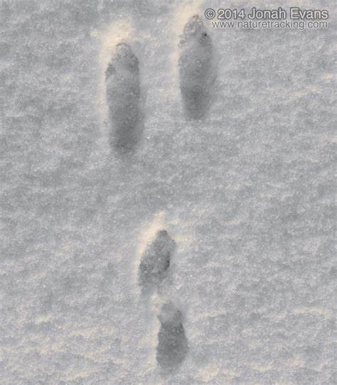
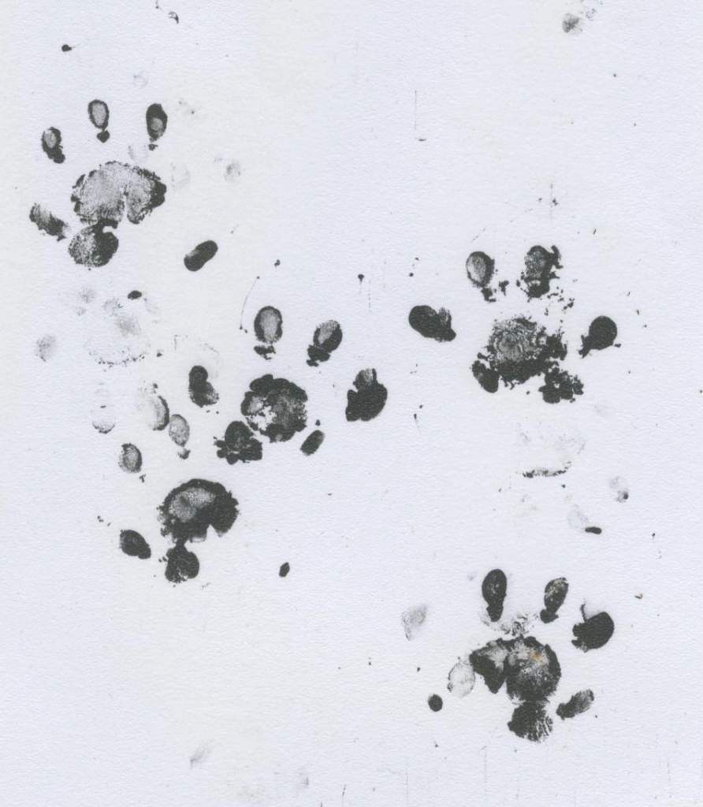
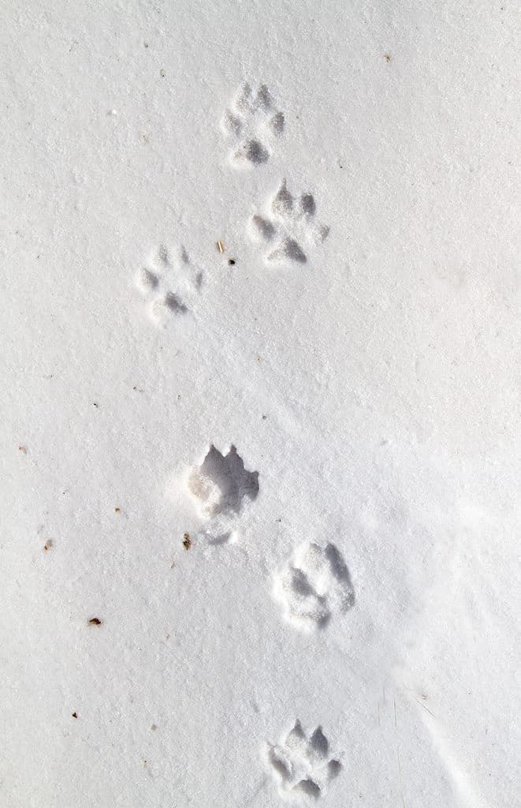
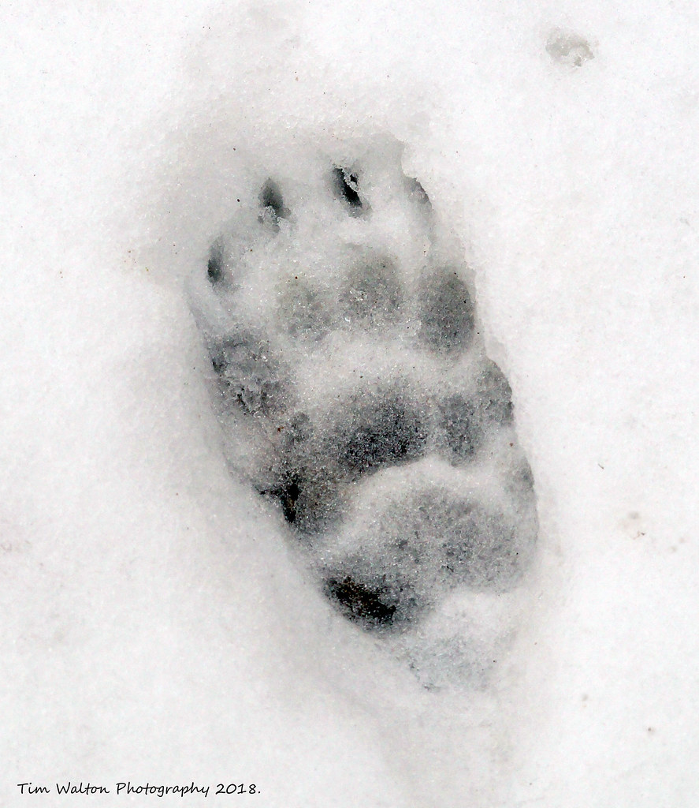
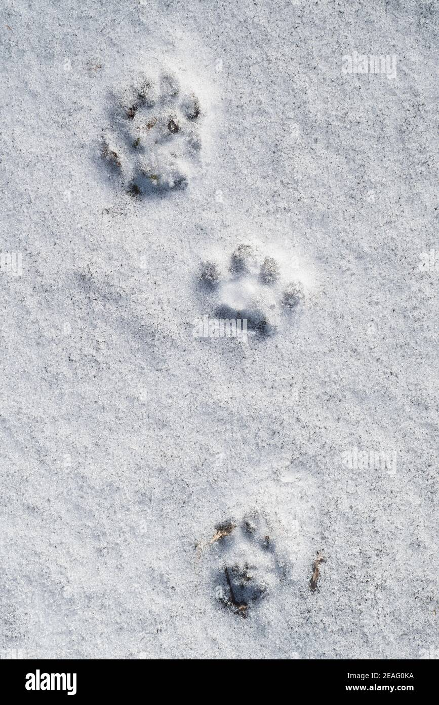

A Simplified Guide to Mammalian Footprints
We have all walked among nature at one point, and often, we are drawn to sights that are immediately in front of us. However, if you were to look a little more closely, you will begin to notice the other creatures that have previously walked the same path. Footprints (also known as tracks) are a great place to start, and are incredibly useful for those who monitor mammalian populations, as it can confirm the presence of a species within an area. Multiple species can co-habit different habitats, so knowing what you're looking at is essential! This short blog aimes to introduce some key species that can be found within the woodlands of the UK; highlighting key features within their prints.
Rabbits
This image was taken from Nature Tracking.
Rabbit tracks can be difficult to identify initially, due to their tracks baring little details. Due to the soles of their feets having a fur lining, toe pads are usually not seen. However, sometimes you may see thin, vertical indentations above the ovicular tracks- these being their nails. Frequently, the smaller tracks (usually 4cm by 2.5cm) are paired with larger tracks, usually twice the size. These are the hindlegs of the rabbit.
Important to note:
Rabbits and hares can often be confused with one another. Hares are usually much bigger than rabbits, including their tracks. Rabbits seek companionship, if there are multiple tracks, it's more likely to be a rabbit rather than the solitary hare.
Hedgehogs
This image was taken from the Wildlife Garden Project.
Hedgehog tracks are sometimes compared to a small human hand, as they possess 5 individual toes on each foot, though 4 toes may only show within their tracks. The width of their tracks are usually between 2-3cm wide. The tracks of their front legs are wider than the back pair.
A helping hand:
What may help in identifying these little critters can be the distance between their front and hind tracks, drawing a circle around the two pairs of tracks can help you to visualise the relative size of a hedgehog.
Foxes
This image was taken from A-Z Animals.
Fox tracks consist of four toes, which may be paired with claw marks as well. Below, a ovicular-shaped pad.
Important to note:
Dog tracks are frequently mistaken as fox tracks, which makes sense as they're related! However, here are some key differences to look out for:
- Fox prints are narrower than dog prints, making the distance between each toe smaller.
- Dogs tend to have a more rounded track, as well as their rear pad being larger overall.
- Foxes are more intentional with their pathing, irregular and inconsistent tracks are more likely from our furry best friend!
Badgers
This image was taken from Flickr.
Badgers tracks are characterised by a larger track, consisting of 5 toes, each with very distinct claw marks branching above them. One way to identify the front and back paws can be the size of the claws, with the back paws being distinctly smaller than the front.
Stoats
This image was taken from Alamy.
The characteristics for the stoat tracks consist of smaller (1-4cm) tracks, with 5 toes spread-out into a star shaped. Sometimes claw marks may be visible.
Important to note:
Stoats belong to the Mustelid family, which includes weasels, mink, otters etc. This may lead to false identification due to incredible similarity within their tracks; particularly between stoats and weasels. Always pay attention to the size of the tracks as it can rule out a few species and lead to more accurate results!
This has been a little introduction into a handful of common species found within the UK woodlands. I hope that with this information, you may be able to start identifying the brilliant species around you. Paying a little more attention to our surroundings can lead to a more fulfilling experience, as well as, a mindful perspective of those who share our space. Happy identifying!